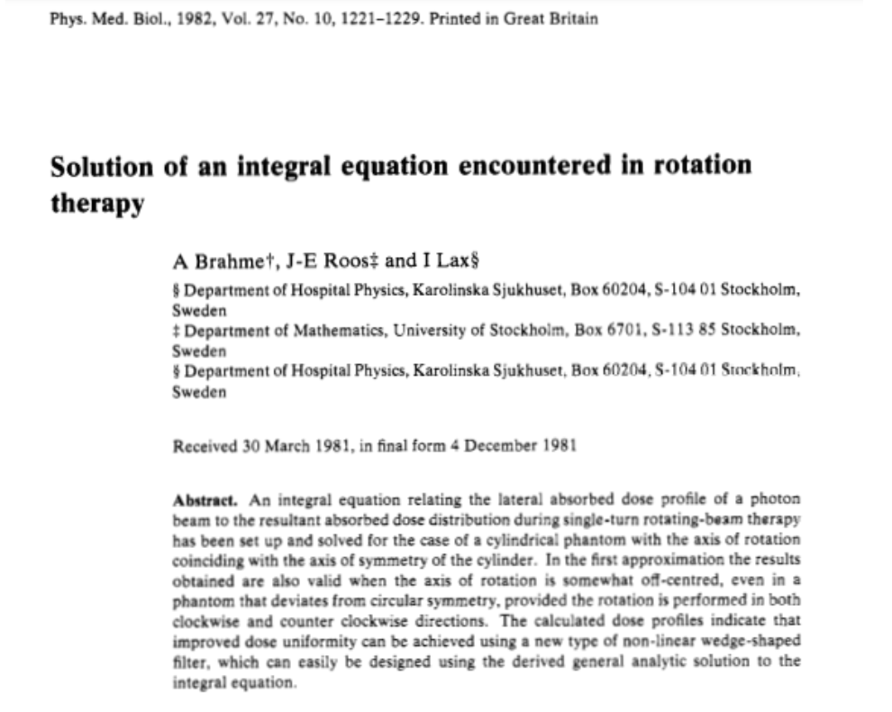
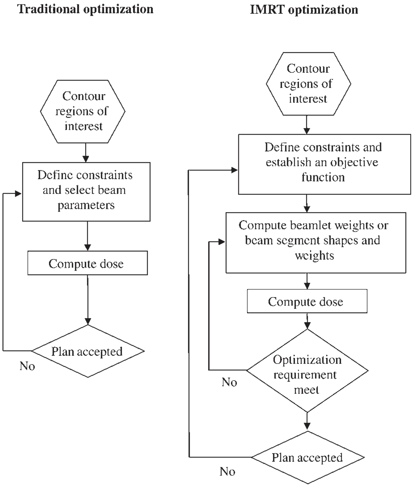
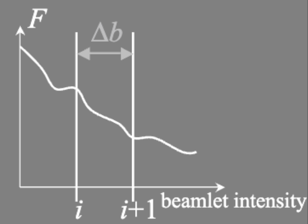
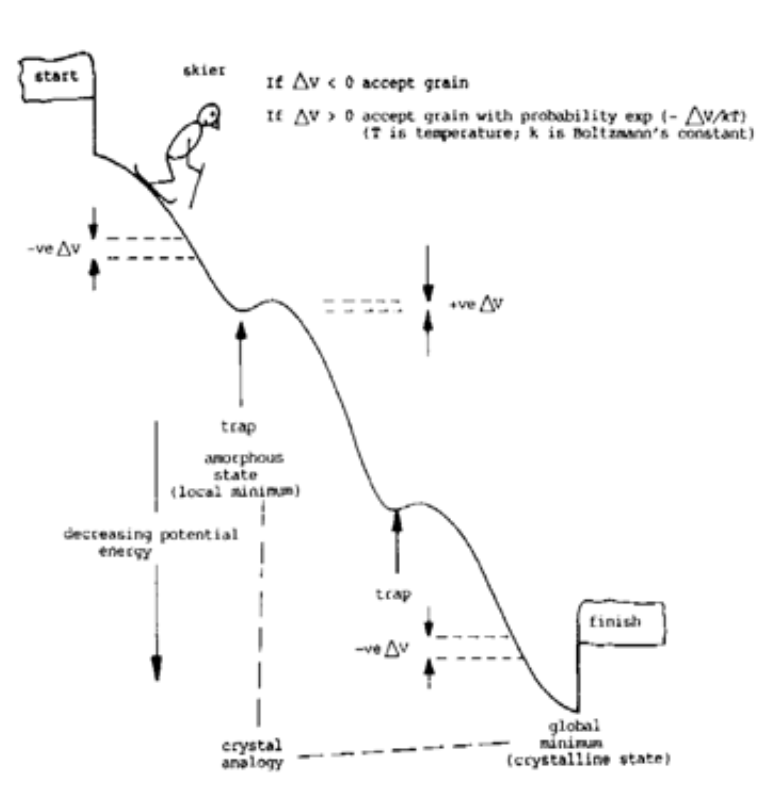

Optimización de tratamientos
Planificación inversa
Modulación de intensidad (IMRT)
- Técnica que permite una alta conformación de la dosis al volumen blanco (alto gradiente de dosis) sin comprometer la uniformidad.
- Aplicable a blancos de cualquier tamaño.
- Permite obtener curvas de isodosis con formas cóncavas o incluso en forma de anillo.
- Reducción de dosis de forma local, imprescindible cuando los órganos críticos están muy cerca del blanco1.
- Facilita la implementación de los tratamientos con boost integrado (SIB)
Haces de fotones
En tratamientos mediante haces de fotones la modulación de la intensidad se consigue actuando sobre la fluencia de fotones y para ello se combinan haces de diferente tamaño
Haces de protones
En tratamientos mediante haces de protones la modulación de la intensidad se consigue actuando sobre la fluencia energética de beamlets o minihaces que componen el haz de tratamiento.
Historia
Propuesto por Anders Brahme en la década de los ochenta no se implantó de forma generalizada en la práctica clínica hasta finales de la década de los 2000 con la generalización de unidades de tratamiento dotadas de colimadores multilámina.

Planificación inversa

La planificación inversa se puede definir como un método de planificación de tratamiento de radiación donde se comienza con la distribución de dosis deseada, o los objetivos clínicos, y luego se determinan los parámetros de tratamiento que permiten administrarla.
En general la planificación inversa se plantea como un problema de minimización de una función de coste que mide el grado de adecuación entre los objetivos planteados y lo que se consigue con cada plan.
La planificación comienza por fijar las parámetros generales de la irradiación que no se optimizan: número de haces, energía y geometría de cada haz.
La minimización se alcanza mediante métodos numéricos de carácter iterativo que determinan el resto de parámetros: número de segmentos, geometría e intensidad de cada segmento.
Definición operativa de la planificación inversa
La planificación inversa consiste en especificar la forma del HDV (los objetivos) y calcular los parámetros de los haces que producen ese resultado.
Es lo contrario de lo que se hace en la radioterapia conformada 3D: en esa técnica se fijan los haces y se calcula el HDV. Si este no es satisfactorio, se prueba con otros haces, pero la elección de estos se hace de forma manual. Esto es posible cuando los parámetros que ajustamos son pocos (el ángulo del haz, su energía y su dosis, por ejemplo). Cuando la fluencia de cada haz puede variar de forma arbitraria, el número de parámetros a ajustar es tan grande que es imposible elegirlos de forma manual.
Proceso de optimización
- Definir estructuras relevantes para considerar durante la optimización.
- Definir los constraints que constituirán la función de coste
- Determinar los pesos que regula la importancia que tiene cada constraint en la función de coste en función de los resultados obtenidos en la optimización.
- Optimizar la fluencia.
- Calcular la secuencia que seguirán las láminas del MLC para producir la fluencia optimizada. En los algoritmos actuales (en la mayoría de los dedicados a IMRT y en la práctica totalidad de los dedicados a VMAT1 este paso se realiza conjuntamente con el anterior mediante algoritmos DAO Direct Aperture Optimization)
- Calcular la distribución final de la dosis de forma precisa para la secuencia optimizada.
- Evaluar si la distribución de dosis cumple con los criterios de aceptación médicos.
Restricciones y objetivos
Las restricciones y objetivos se utilizan para caracterizar la distribución de dosis deseada.
Definiciones
Restricciones de dosis: Criterios de dosis que deben ser alcanzados. Los planes que no cumplan con estos criterios serán rechazados y el optimizador hará todos los compromisos necesarios para cumplirlos. No siempre presentes. El optimizador actual del planificador Eclipse (Varian) no los contempla
Objetivos de dosis: Criterios de dosis que deben ser priorizados, pero un plan aceptable puede violar estos criterios para cumplir con las restricciones.
Tipos de objetivos de dosis del plan
- Dosis mínima, dosis máxima, dosis media.
- Restricciones de volumen de dosis:
- Especificar cuánto del volumen puede recibir X Gy o más.
- Especificar cuánto del volumen puede recibir Y% o menos.
- En algunos sistemas se tienen que definir antes de la optimización pero en otros son reajustables a medida que se avanza hacia el resultado final.
Optimización de la fluencia
- Los haces planificados (o una discretización en el caso de los arcos) se subdividen en minihaces.
- La intensidad de los minihaces se varía iterativamente.
- En cada iteración se calcula una aproximación a la distribución final.
- Se evalúa la adecuación de la distribución de dosis a los objetivos buscados.
- Las intensidades de los minihaces se varían según un vector calculado por el optimizador para mejorar la distribución.
Evaluación del plan durante la optimización. Función de coste
- Los objetivos del plan se formulan matemáticamente como una función cuadrática objetivo (coste) para evaluar las soluciones del plan.
Ejemplo de función de coste (formulación directa y simple)
\[ C_n =\left[ \left( \frac{1}{N}\right)\sum_{r}W(\vec{r})\cdot(D_0(\vec{r})-D_n(\vec{r}))^2\right]^{0.5} \]
\(N\) número de puntos de dosis, \(\vec{r}\) punto en el paciente, \(D_0\) dosis objetivo, \(D_n\) dosis tras interación \(n\), \(W\) peso.
Con vistas a la optimización la función de coste o función objetivo se puede escribir simplemente como
\[ F_i = \sum_{k=1}^{M} w(k) \left( D_p(k) - D_i(k) \right)^2 \] \[ D_i(k) = \sum_{j=1}^{N_j} b_i(j) \cdot d(j,k) \]
\(D_p(k)\) Dosis prescrita en el voxel \(k\)
\(D_i(k)\) Dosis calculada en el voxel \(k\) tras la iteración \(i\)
\(d(j,k)\) Contribución elemental de dosis del beamlet \(j\) al voxel \(k\)
Optimización mediante el método del gradiente1
En cada iteración \(i\), las intensidades de los minihaces se cambian por \(\Delta b\).
- Dirección: Opuesta al gradiente de \(F\) (primera derivada).
- Paso: Ajustado según la curvatura (segunda derivada).

Formulación del método del gradiente
- Intensidad del minihaz en la iteración \(i\): \[ b_{i+1} = b_i + \Delta b \]
- Primera derivada para el minihaz \(j\): \[ \frac{\partial F}{\partial b(j)} = 2 \sum_{k=1}^{M} w(k) \left( D_p(k) - D_i(k) \right) \cdot d(j,k) \]
- Segunda derivada para el minihaz \(j\): \[ \frac{\partial^2 F}{\partial b(j)^2} = 2 \sum_{k=1}^{M} w(k) \cdot d(j,k)^2 \]
Actualización de la intensidad del minihaz \(j\): \[ b_{i+1}(j) = b_i(j) - \alpha \frac{\frac{\partial F}{\partial b(j)}}{\frac{\partial^2 F}{\partial b(j)^2}} \]
Nos movemos en dirección opuesta al gradiente de \(F\) y tanto menos cuanto más curvada sea la variación.
\(\alpha\) = factor de amortiguación determinado empíricamente.
Discusión del método del gradiente
- Rango de aplicabilidad
- Asume que la función objetivo se aproxima localmente por una función cuadrática (método “quasi Newton”).
- Diseñado para evitar valores negativos de la intensidad del haz.
- Funciona bien si no hay un mínimo local para \(F\) (probado para la optimización de la intensidad del haz).
- Posibilidades para acelerar la búsqueda iterativa
- Precálculo de dosis elementales \(d(j,k)\).
- Algoritmos más rápidos de cálculo de dosis (aproximaciones).
- Selección sofisticada de la dirección y tamaño del paso (por ejemplo, basada en estadísticas de pasos anteriores).
El método de recocido simulado (simulated annealing)
- Método iterativo para encontrar el mínimo global de una función.
- Analogía con el enfriamiento de metales hasta un estado cristalino.
- Tunelización aleatoria en la dirección incorrecta para evitar quedar atrapado en un mínimo local (con una probabilidad cada vez menor a medida que avanza la iteración).
- Más lento que los métodos de gradiente directo.
- Necesario si hay riesgo de mínimos locales (por ejemplo, para la optimización de direcciones de haz).


Optimización de tratamientos. Física de la radioterapia